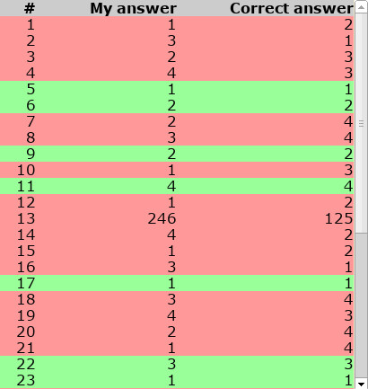
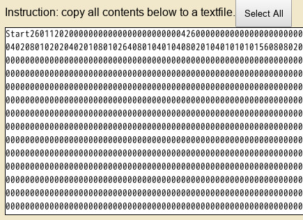

Test mode would simulate the actual process of the test, including all four parts in order: reading section, listening section, speaking section, and writing section. There would be a compulsory ten-minute break after listening section, like the actual test. Answers and responses will be saved automatically. Certainly, the bomb-like timer is unstoppable.
Practice mode splits an entire set of test into several parts. Apart from four sections mentioned above in the test mode, an individual task of speaking or writing could be selected as well. Answers of the selected part will be saved. In this mode, you could stop the timer.
Review mode compares your answer and correct answer of reading section and listening section in a chart, from which you can reach every question and see solutions. For the speaking and writing section, since there are no correct answer, the chart show your own responses.
openTPO takes advantage of HTML5 traits: local storage. Needless to operate with files on your hard disk, openTPO save your answers immediately after you make a choice in the browser storage pool.
According to documentation on the trait of local storage, your answers will retain after you close the browser and even restart your computer, like what cookies do, which keep you logged in on a certain webpage such as Google. This trait is supported by all modern browsers and platforms.
Although a webpage has no permission to view or modify local files (otherwise surfing on the Internet would be extremely thrilling), openTPO is designed to allow you exporting and importing your answers, in case of accidently clearing browser history or changing a browser.
This feature is still under testing and unstable, but the online preview edition (clicking the button below labeled Try it now!) provides its prototype. Welcome to experience!